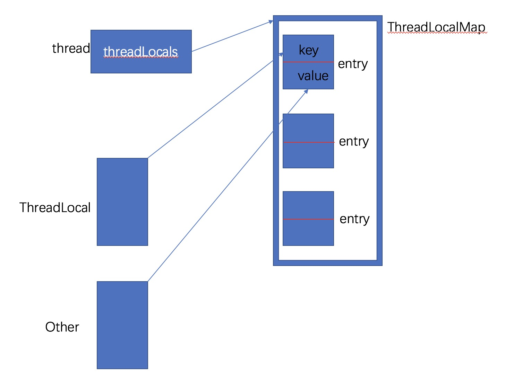

ThreadLocal详解(一)
最近工作中正好使用了ThreadLocal,之前对它底层实现不是非常清晰.今天正好看一遍
目录
用法
有时候我们需要为每个线程设置一些属性(比如说sessionId).并且这些属性在上下文中都会用到. 那么这些属性就需要做到线程隔离.这时候ThreadLocal就登场了.它可以在线程内存储一些属性.而不会其他线程获取到(即各个线程只能获取自己的,从而达到线程隔离的目的).
public class SessionContext {
private static final ThreadLocal<String> SESSIONS = new ThreadLocal<>();
public static void setSessionId(String sessionId) {
SESSIONS.set(sessionId);
}
public static String get() {
return SESSIONS.get();
}
public static void remove() {
SESSIONS.remove();
}
}
````
```java
public static void main(String[] args) {
String sessionId = RequestContext.get();
try{
//do something
}finally {
RequestContext.remove();
}
}
使用完了之后一定要注意调用remove()方法
源码解析
ThreadLocalMap哈希表
static class ThreadLocalMap {
static class Entry extends WeakReference<ThreadLocal<?>> {
/** The value associated with this ThreadLocal. */
Object value;
private Entry[] table;
Entry(ThreadLocal<?> k, Object v) {
super(k);
value = v;
}
}
ThreadLocalMap(ThreadLocal<?> firstKey, Object firstValue) {
table = new Entry[INITIAL_CAPACITY];
int i = firstKey.threadLocalHashCode & (INITIAL_CAPACITY - 1);
table[i] = new Entry(firstKey, firstValue);
size = 1;
setThreshold(INITIAL_CAPACITY);
}
}
table是哈希表，即ThreadLocalMap内部的存储结构为Entry[]哈希表.
可以看到在这个ThreadLocalMap数据结构中ThreadLocal是key,而存储对象是value.
ThreadLocalMap是ThreadLocal的内部类,它又有个内部类Entry.该Entry继承自WeakReference.在java gc的时候,如果该对象只被弱引用引用了的话会被回收,而不管内存是否足够(但是有个前提,就是弱引用本身没有被外部引用所引用)。为何entry要这么设计？这么设计的优缺点在哪？ 我们后面解答.
重要的几个基础方法
threadLocals
ThreadLocal.ThreadLocalMap threadLocals = null;
该属性位于Thread中。由此可见每个线程内部都有一个ThreadLocalMap。
nextHashCode
private final int threadLocalHashCode = nextHashCode();
private static AtomicInteger nextHashCode =
new AtomicInteger();
private static final int HASH_INCREMENT = 0x61c88647;
private static int nextHashCode() {
return nextHashCode.getAndAdd(HASH_INCREMENT);
}
由于ThreadLocalMap中的key是ThreadLocal为了解决相同线程使用连续threadLocals时的冲突问题.在ThreadLocal中解决哈希碰撞的方法为开放寻址法.至于HASH_INCREMENT为什么是0x61c88647,在这里我们不纠结哈希算法本身。 > 建议先看一遍开放寻址法的线性探测思路,因为threadlocal后面很多内容都是根据这个思想来做的
nextIndex
private static int nextIndex(int i, int len) {
return ((i + 1 < len) ? i + 1 : 0);
}
在ThreadLocalMap中
i是ThreadLocal中哈希表的下标,len为哈希表的长度.该方法的作用是根据下标i返回下一个下标i+1。如果下一个下标大于等于len则回到哈希表的头部(符合开放寻址法的思想)，与之相反的方法是prevIndex(int i, int len)
以上方法都会在接下来的操作中不断出现。
结构

ThreadLocal
我们先依照ThreadLocal的set,get,remove依次看下去.
set
public void set(T value) {
//获取当前线程
Thread t = Thread.currentThread();
//从当前线程中获取threadLocalMap
ThreadLocalMap map = getMap(t);
if (map != null)//如果存在直接set该value，并用当前ThreadLocal(this)作为key
map.set(this, value);
else//如果不存在就需要创建map
createMap(t, value);
}
这个方法内容还是比较简单的,不细说
getMap(t)
ThreadLocalMap getMap(Thread t) {
return t.threadLocals;
}
前面已经说过Thread内部有个属性threadLocals指向一个ThreadLocalMap.
createMap(t, value)
void createMap(Thread t, T firstValue) {
t.threadLocals = new ThreadLocalMap(this, firstValue);
}
private static final int INITIAL_CAPACITY = 16;
ThreadLocalMap(ThreadLocal<?> firstKey, Object firstValue) {
table = new Entry[INITIAL_CAPACITY]; //new一个大小为16的Entry数组
int i = firstKey.threadLocalHashCode & (INITIAL_CAPACITY - 1);//获取初始下标i
table[i] = new Entry(firstKey, firstValue);//将key,value存入entry，然后将entry放到tabled的i位置
size = 1;
setThreshold(INITIAL_CAPACITY);//设置阈值,阈值为INITIAL_CAPACITY的2/3
}
创建ThreadMap的过程其实就是初始化哈希表的过程.阈值是用于判断什么时候哈希表该扩容的.HashMap里面就有类似的设置.这里的过程也是比较容易懂的。
map.set(this, value)
private void set(ThreadLocal<?> key, Object value) {
Entry[] tab = table;
int len = tab.length;
int i = key.threadLocalHashCode & (len-1); //下一个下标
//遍历哈希表table,直到找到一个空位置,如果当前位置有存放entry，则需要对entry进行操作
for (Entry e = tab[i];
e != null;
e = tab[i = nextIndex(i, len)]) {
ThreadLocal<?> k = e.get();
if (k == key) {//如果key相等表示之前已经存放了相同key的值,此时只需要覆盖原来的值即可(更新value)
e.value = value;
return;
}
if (k == null) {//由于key为弱引用,所以它是会被回收的.如果它被回收了,则说明该entry已经是个过期的数据
//替换旧数据
replaceStaleEntry(key, value, i);
return;
}
}
//没有发现key相同的entry,也没有发现可以存放数据的过期的entry.但是发现了空插槽
//则需要新建entry存放数据，并将其放入空插槽
tab[i] = new Entry(key, value);
int sz = ++size;
//如果没有清理过entry并且table的容量超过了阈值,则需要重新哈希并扩容。
if (!cleanSomeSlots(i, sz) && sz >= threshold)
rehash();
}
由于ThreadLocalMap对key的设计,所以这里需要进行旧数据的清除.我们接下需要重点解释下replaceStaleEntry以及rehash。
replaceStaleEntry
private void replaceStaleEntry(ThreadLocal<?> key, Object value,int staleSlot) {
Entry[] tab = table;
int len = tab.length;
Entry e;
int slotToExpunge = staleSlot;//第一个旧条目的下标
//根据当前的旧entry的下标，往前遍历table.找出空插槽,并记录下来
for (int i = prevIndex(staleSlot, len);
(e = tab[i]) != null;
i = prevIndex(i, len))
if (e.get() == null)
slotToExpunge = i;
//向后遍历,直到遇到空插槽
for (int i = nextIndex(staleSlot, len);
(e = tab[i]) != null;
i = nextIndex(i, len)) {
ThreadLocal<?> k = e.get();
//如果向后遍历的过程中找到了相同的key，则需要将该entry跟旧entry替换,以便整理哈希表
if (k == key) {
e.value = value;
tab[i] = tab[staleSlot];//将旧entry换到当前插槽,以便下面清理插槽
tab[staleSlot] = e;
// 如果第一个旧条目就是staleSlot,则将当前插槽下标记为清除插槽的起始下标
if (slotToExpunge == staleSlot)
slotToExpunge = i;
//清理插槽
cleanSomeSlots(expungeStaleEntry(slotToExpunge), len);
return;
}
//如果在向后遍历的过程中找到的key为null,并且第一条旧entry是staleSlot,则需要重新标记slotToExpunge
if (k == null && slotToExpunge == staleSlot)
slotToExpunge = i;
}
// 如果没有找到key,则创建个新的entry放到旧的entry位置
tab[staleSlot].value = null;
tab[staleSlot] = new Entry(key, value);
// 如果发现任何其他旧条目,则需要清理插槽
if (slotToExpunge != staleSlot)
cleanSomeSlots(expungeStaleEntry(slotToExpunge), len);
}
整个过程如果理解了开放寻址法然后来看,还是比较简单的.接下来我们看看它是怎么清理旧的过期的entry的.
expungeStaleEntry
private int expungeStaleEntry(int staleSlot) {
Entry[] tab = table;
int len = tab.length;
//清理staleSlot位置插槽
tab[staleSlot].value = null;
tab[staleSlot] = null;
size--;
Entry e;
int i;
for (i = nextIndex(staleSlot, len);
(e = tab[i]) != null;
i = nextIndex(i, len)) {//向后遍历table,直到遇到空插槽
ThreadLocal<?> k = e.get();
if (k == null) {//如果key为null就将其抹去
e.value = null;
tab[i] = null;
size--;
} else {
int h = k.threadLocalHashCode & (len - 1);
if (h != i) {//如果len发送了变化(有entry减少),则需要进行重新哈希
tab[i] = null;
// Unlike Knuth 6.4 Algorithm R, we must scan until
// null because multiple entries could have been stale.
while (tab[h] != null)
h = nextIndex(h, len);
tab[h] = e;
}
}
}
return i;
}
清楚过期entry的过程是找出key为null的entry，将其设置为空即可。key不为null则重新哈希.并返回遍历过程中遇到的空插槽的下标.
由于哈希的散列分布并不是连续的,可能会出现多个连续空间.所以根据staleSlot为下标向后遍历并抹去了旧的entry,并不能把哈希表里面所有的旧entry抹去.所以还需要再cleanSomeSlots
cleanSomeSlots
private boolean cleanSomeSlots(int i, int n) {
boolean removed = false;
Entry[] tab = table;
int len = tab.length;
do {
i = nextIndex(i, len);
Entry e = tab[i];
if (e != null && e.get() == null) {
n = len;
removed = true;
i = expungeStaleEntry(i);
}
} while ( (n >>>= 1) != 0);
return removed;
}
该方法会扫描哈希表中log2(n)个entry.如果找到了空的插槽就会调用expungeStaleEntry来清除该下标i以及它之后的空插槽.
清理旧entry到此就结束了.接下来我们看下rehash
rehash
private void rehash() {
//清除所有旧条目
expungeStaleEntries();
// 写得很奇葩。。。。其实就是size>=threashold * 0.75(等于len * 0.75 * 0.75)
//清除完所有旧条目之后还是容量太小就扩容
if (size >= threshold - threshold / 4)
resize();
}
private void expungeStaleEntries() {
Entry[] tab = table;
int len = tab.length;
for (int j = 0; j < len; j++) {//遍历所有条目,并清除旧条目
Entry e = tab[j];
if (e != null && e.get() == null)
expungeStaleEntry(j);
}
}
重新哈希的时候会遍历所有节点,并清除旧条目。然后判断容量是否超过了阈值的0.75倍,如果超过了就需要扩容.扩容步骤如下:
resize
private void resize() {
Entry[] oldTab = table;
int oldLen = oldTab.length;
int newLen = oldLen * 2;//容量直接翻倍
Entry[] newTab = new Entry[newLen];
int count = 0;
//将旧的哈希表中的条目移动到新的哈希表中
for (int j = 0; j < oldLen; ++j) {
Entry e = oldTab[j];
if (e != null) {
ThreadLocal<?> k = e.get();
if (k == null) {
e.value = null; // Help the GC,不多解释
} else {
int h = k.threadLocalHashCode & (newLen - 1);
while (newTab[h] != null)//找到空插槽,将条目放入
h = nextIndex(h, newLen);
newTab[h] = e;
count++;
}
}
}
setThreshold(newLen);//更改阈值
size = count;
table = newTab;//引用指向新的哈希表.
}
整个set过程到此结束。总结下,在set值流程如下: 1. 从当前线程中拿ThreadLocalMap 2. 如果不存在则创建ThreadLocalMap 1. 创建一个容量为16哈希表. 2. 创建一个新条目,并存放到哈希表中 3. 如果已经存在则将值放入哈希表中 1. 根据nextHashCode遍历哈希表直到遇到空插槽. 1. 如果遍历的过程找发现有条目的key为空的旧条目.则需要替换旧条目 1. 替换也需要遍历哈希表,如果过程中如果遇到了key相同的条目则,将value值替换,并清除旧条目 2. 如果没有遇到相同key的条目时,直接创建一个新条目替换当前条目(因为当前插槽中存放的是个旧条目) 1. 根据下标向后遍历,清除遍历到的旧的插槽,直到遇到下一个空插槽。 1. 由于哈希散列的不连续性,所以还需要进行一次遍历log2(n)个条目的遍历,以便尽可能清除旧条目 1. 如果遍历后没有找到相同key的条目,也没有发现旧条目,则创建一个新条目存放值，然后放入哈希表中 2. 如果此时的哈希表大小超过了阈值,则需要进行rehash. 3. rehash时会遍历整个哈希表,清除所有的旧条目. 4. 如果清除了所有旧条目还是容量不够就扩容。
看到这里,threadLocal其实已经明白了一大半了.因为接下来的get和remove都会用到清楚条目的方法.接下来的内容还很长,我打算分开两篇博客.请期待下一篇